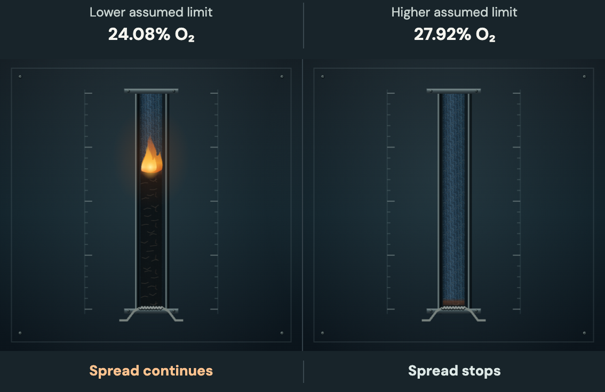

Technical manual
Run the dashboard, trace a question to its source, and verify a release. For the lunar experiment and a worked forecast, turn to FM² in depth, pages 4–6. The source-build commands below start in the team’s repository. The public downloads include the offline dashboard and the FLINT source and tests.
Choose a runtime
| Public or offline | Open the public dashboard or use the offline download and launch instructions. The browser handles case questions, search, archive chat, and the FM² forecast. To serve the same files locally, use the command below and open port 8000. |
|---|---|
| Local model | Install Python 3.12 and Ollama. Start Ollama, then run the setup and server commands below. The initial setup downloads weights. Open http://127.0.0.1:8765/#chat. On Windows use .chat-venv\Scripts\python.exe for the server. |
# Static dashboard python3 -m http.server 8000 --bind 127.0.0.1 --directory dist # Local transformer chat (macOS or Linux) python3.12 scripts/setup_chat.py .chat-venv/bin/python -m chat.server
Trace a question through the system
| Case questions | In Evidence comparison → Ask your own question, type a question and select Find evidence. site/case-questions.js compares its terms with the open case’s passages, limits and comparisons. Results include source links. For SAME, try “Did the detector miss Teflon smoke?” Asking for exact seconds to alarm exposes a measurement gap: the recorded duration refers to smoke generation. |
|---|---|
| Find evidence | site/search.js combines a bundled Model2Vec embedding with keyword matching across case and investigation summaries. Exact test IDs and individual measurement rows are available in Data explorer. |
| Research chat | The public chat retrieves from the bundled archive. On the local service, BGE embeddings, BM25 keyword scores and run IDs retrieve evidence. Qwen3 0.6B selects up to three passages via Ollama. The server validates selections and returns their text and citations. Documented Apollo incidents use a dedicated sourced lookup. |
Inspect the local API
curl http://127.0.0.1:8765/api/health
curl -H 'Content-Type: application/json' \
-d '{"message":"Did the Nomex ignite in sample 2-7?"}' \
http://127.0.0.1:8765/api/chat
Health reports readiness, model identity and fingerprints. Chat accepts a 1–2,000 character message and up to 12 prior messages. Inspect status, answer and each citation’s url and locator.
Data and release operations
Edit the source directories, rebuild the distribution, and check the packaged site before publishing.
Know what each result represents
| NASA observations | The Atlas indexes 1,622 nonempty source records from 15 investigations in 16 tables. The extended catalog covers 19 investigations and 20 original tables. Nine contribute the 1,058 normalized observations in data/tests.csv. Resolve a value using its original filename, row, units and DOI. A blank value means the field cannot be used as a measurement. |
|---|---|
| Habitat ranking | The explorer filters by subject and optional material. Within each investigation it selects the best eligible row. More complete gravity, ambient oxygen and pressure records rank first, then smaller weighted distance. Inverse burner oxygen is excluded from cabin comparisons. All ranked gravity values represent nominal orbit. |
| FM² forecast | Four planned burns at 8.2 psia share an uncertain oxygen threshold (default mean 26% O₂, standard deviation 1.5 points). The illustration compares the selected burn with the two ends of the central 80% interval. Its flame motion is illustrative. Scores use only resolved entries. Lunar outcomes remain unverified. |
Change and verify the archive
Edit interface code in site/, case content in data/cases.json, and local chat code in chat/. After changing a scientific claim, verify its source locator and the experimental conditions. Use Python 3.10+ to build, and Node 18+ for the case-question tests.
python3 scripts/build.py python3 scripts/verify_release.py python3 -m unittest discover -s tests -p '*_test.py' node --test tests/case-questions.test.cjs
The build regenerates records and the forecast, checks quotations, and assembles dist/. Release verification checks file hashes, source-table hashes, row counts, asset links and exclusion of the assessor key. Publish the complete dist/ from the verified Git commit. Open a case and a PDF in a signed-out browser after deployment.
Interpret the benchmark
Local chat v2.1 passed 78 of 100 questions under the full scoring rubric and 14 of 24 on a separate set. The 100-question check grades content, response status and required citations. Compare individual replies and failures in the benchmark. These runs evaluate local chat. The case-question matcher has its own tests. A blind comparison with human researchers is available as a protocol.
Diagnose common failures
Missing data or blank dashboard: open dist/index.html with its adjacent files, or rebuild. Local model unavailable: run ollama list, confirm qwen3:0.6b is installed, and check /api/health. Unexpected evidence: check the material, endpoint, oxygen field and test ID in the original row before using the result.
From evidence to a simulation
The browser already runs archive search, claim review, the FM² model and a sealed-cabin solver (page 7). The local transformer selects evidence. The passive tracer solver and repeat experiment are described on page 8. The proposed Grok service and physical validation of spacecraft sensor traces are further work.
Review a claim on the device
The Referee checks the quote against page fingerprints, replays an independent Gemma 3 1B judgment for an exact reviewed pair, and recomputes supported numerical claims. A scope check catches invalid transfers. The planted quote and public release error log expose failures. For a new claim, an optional checksum-pinned MobileBERT model runs locally in WebAssembly. Saved reviews work offline. The device check uses available hardware and storage indicators to suggest a mode.
Chat routes recognized questions to the corresponding engine. An optional local text résumé suggests the reading depth. The reader can override it and the résumé stays in the browser.
Preserve the evidence trail
Keep each source table with its version, DOI and checksum. Normalize units while retaining the source file, row and measured quantity. A simulation also needs time-aligned measurements, chamber geometry, release history and calibrated ventilation. The existing 1,058 observation rows alone cannot supply those inputs.
Connect Grok through the existing selector interface
Implement a server-side adapter for opt-in hosted sessions. Send the question, relevant dialogue and the same ranked passages used locally. Keep the API key on the server. Accept a status and up to three passage IDs. Validate them against the candidates, then resolve citation URLs and locators from the archive. A local session stays local if a request fails.
Before enabling hosted use, run both providers on the frozen 100 questions and a fresh unseen set. Blind-review disputed answers. Require more fully supported answers, zero fabricated flight outcomes or safety approvals on reviewed challenges, and latency and cost within budgets declared before testing.
Validate the transport model against sensor traces
| 1 · Predict a sensor trace | Prescribe a tracer release into two connected, well-mixed zones. Conserve species mass across each flow and model sensor delay and response. Compute concentration over time and time to a declared detection level. |
|---|---|
| 2 · Test the prediction | Check analytic tracer decay, closed-zone mass balance, nonnegative concentrations and time-step convergence. Fit exchange and sensor parameters on calibration runs. Hold out entire runs or sensors. Compare concentration error, onset-time error and uncertainty coverage with a one-zone baseline against predeclared tolerances. |
| 3 · Extend to fire | With measured material properties and independent burns, couple solid heating and pyrolysis to low-Mach gas flow. Validate each material, gravity and ventilation regime. Consider a faster surrogate only after solver verification and experimental validation within its operating range. |
Define the chat-to-solver contract
Scenario input. Supply geometry, material, gravity vector, gas state, boundary conditions and source histories with units, provenance and uncertainty. The server checks completeness and the solver’s validated range. Ask for missing inputs or explain an out-of-range request.
Run output. A fixed solver returns a run ID, input hash, solver version, time series, uncertainty, numerical warnings and validation status. Chat links to that run. The interface identifies measured, assumed, simulated and unknown quantities so a reader can trace each number.
What would a lunar fabric burn tell us?
Flammability of Materials on the Moon (FM²) asks how a material used in spacecraft behaves in sustained lunar gravity. In the March 2026 design, a hot wire heats the bottom of a fabric strip. Once the wire switches off, can the flame keep moving up the strip?
Why do this on the Moon?
In a gas-filled chamber, rising hot gases draw fresh oxygen toward a flame. Lunar gravity is about one-sixth of Earth’s, so that buoyant flow changes. How much oxygen reaches the flame and how much heat reaches fresh fabric both affect propagation. A material that passes an Earth screening test could still propagate a flame under different gravity and ventilation. A lunar test allows this process to continue beyond the brief low-gravity interval available in a drop tower.
What the experiment controls
| Fabric and mounting | Four Synergy Pro Navy specimens are tested individually. Thin metal frames expose a vertical strip 2 cm wide and 20 cm tall on both faces. The March design places each sample’s hot wire at the lower edge for upward spread. |
|---|---|
| Gas and pressure | The 14.4 L chamber is vented and refilled for each test. Initial pressure is 8.2 ± 0.3 psia (pounds per square inch absolute). Oxygen starts at 37%, 33%, 29% or 25% by volume, with nitrogen making up the balance. Combustion can lower the oxygen concentration within a burn. |
| Measurements | Front and back cameras track flame movement. Radiometers measure radiation from each side. Gas sensors track oxygen, carbon dioxide, carbon monoxide and humidity. Matching images, gas readings and igniter timing is essential for interpreting a test. |
Three questions about one burn
Did it ignite? Look for flaming of the specimen during or after the attempt. A glowing hot wire alone establishes only that the wire is hot.
Did spread sustain? Look for a flame front moving into fresh fabric beyond the region heated by the wire after electrical power ends. A brief flash that dies near the wire can establish ignition while leaving the sustained-spread answer “no.” FIRST FIRE forecasts this second event.
At what oxygen level did it go out? A usable extinction reading requires a sustained burn, a documented extinction event and valid oxygen measurements at that time. Running out of fabric or stopping the test by command cannot establish the limiting oxygen level.
Why does 25% oxygen give a 25.25% chance?
The first percentage describes the gas in the chamber. The second describes uncertainty about a yes/no outcome. To connect them, FIRST FIRE assumes an unknown limiting oxygen concentration shared by all four nominal burns.
Calculate one probability
Call the starting oxygen percentage x and the shared limit L. In this model a sample sustains spread when x > L. The worked example describes uncertainty in L with a normal distribution centered at μ = 26% O₂, with standard deviation σ = 1.5 percentage points. Thus one standard deviation below the mean is 24.5% oxygen.
Φ is the cumulative standard normal distribution. At 25% oxygen, (25 − 26) / 1.5 ≈ −0.67. About 25.25% of the assumed threshold distribution lies below 25%. Its 10th and 90th percentiles, μ ± 1.28155σ, are 24.08% and 27.92% O₂. NASA’s separate expectation of a 24–26% lunar limit has no published probability attached to it.
| Burn | Starting O₂ | NASA’s March 2026 expectation | P(sustained) |
|---|---|---|---|
| 1 | 37% | Burn down to the oxygen limit | >99.99% |
| 2 | 33% | Burn down to the oxygen limit | >99.99% |
| 3 | 29% | Burn down to the oxygen limit | 97.72% |
| 4 | 25% | Ignition unlikely | 25.25% |
Try it on the dashboard
- Open FM² forecast and select Restore worked assumptions. Under Starting oxygen, select 25%. The ring on the curve marks the selected burn.

- Choose Play ignition to replay the wire heating and switching off. With reduced motion, choose Show ignition, then Switch off igniter. At 25% O₂, spread continues in the 24.08% example and stops in the 27.92% example. Counting the two pictures would incorrectly give 50%.
- Select 29%. Both examples sustain because 29 exceeds both limits. The distribution still allows limits above 29, so the chance of no sustained spread is 2.28%. Flame color, timing and travel distance are illustrative. The model supplies no spread speed or pressure history.
- Return to 25%, then change Mean limit to 27 with spread at 1.5. The chance falls to 9.12%. To enter uncertainty directly, use Set the central 80% interval directly → Use these bounds. Restore the worked assumptions before scoring on the next page.
Score a forecast and choose the next test
Use the same endpoint and the original forecast for each test. A probability earns a score only when an outcome can be classified. Four burns on one material cannot establish calibration across other materials or atmospheres.
Enter four hypothetical outcomes
In Score hypothetical outcomes, choose Yes for verified post-power spread, or No for a nominal test with no ignition or no sustained spread. Choose Pending when no attributable result is available. Choose Void for a hardware fault, protocol change, abort or evidence too ambiguous to classify. Pending and void trials contribute no error term.
Try Yes, Yes, Yes, No in burn order. For the Brier score, convert each predicted probability p to a number between 0 and 1, set y to 1 for yes or 0 for no, then average (p − y)² across resolved burns. Lower is better. Both predictors use exactly the same burns.
| Initial O₂ | Outcome | Model squared error | Comparator squared error |
|---|---|---|---|
| 37% | Yes | <0.000001 | 0.0100 |
| 33% | Yes | <0.000001 | 0.0100 |
| 29% | Yes | 0.000518 | 0.0100 |
| 25% | No | 0.063752 | 0.0100 |
| Mean | 4/4 resolved | 0.0161 | 0.0100 |
The locked project comparator uses 90%, 90%, 90% and 10%. NASA supplied qualitative expectations only. The model’s largest error comes from assigning about 0.2525 probability to spread on a hypothetical “no.” Change any outcome to pending or void to see the reduced coverage and partial score.
Read the follow-up design
Before entering outcomes, Choose the next oxygen test selects 26% O₂. At that level both outcomes have equal probability, yielding one bit of information about the threshold. The dashboard evaluates 22–30% starting oxygen in half-point steps while holding other conditions fixed.
After Yes, Yes, Yes, No, the 25% failure implies L ≥ 25%, and the 29% success implies L < 29%. Within that bracket, 26.5% O₂ gives a 52.16% conditional chance of spread, the most informative grid choice. A success at lower oxygen followed by failure at higher oxygen contradicts a single fixed limit. The dashboard then withholds a conditional design.
What would justify a stronger prediction?
For each flight result, retain the sample ID, gas composition and pressure, synchronized camera and gas records, and power-off time. A physical spread model also needs material properties, flow and geometry. Validate speed and extinction against independent burns under matched conditions. A result on another fabric or at Earth gravity needs a separate transfer test.
Download scenario JSON preserves your assumptions and hypothetical outcomes. A SHA-256 digest identifies your export. For a prospective score, use the signed version on page 7 and attributable flight results.
Shipped engines and forecast lock
Each view exposes the source, assumptions or method behind its result. Use these checks to reproduce a run from the frozen release.
Trace the four views
| The Gap | Atlas counts each nonempty source row once. Pair inspection compares nine fields, distinguishes chamber and burner O₂, and links original notes. CSV exports retain native cells, accession, row, version, source URL and SHA-256. Compass ranks normalized observations within subject on gravity, ambient O₂ and pressure. |
|---|---|
| The Audit | Seven Rulebook questions show evidence by gravity regime. Passports describe every investigation, its hardware, what each row represents and its original tables. |
| The Oracle | The editable threshold model and next-test comparison are on pages 4–6. Use the fixed forecast below for prospective scoring. |
| At Home | Earth applications pair a transfer question with the missing measurement and a source. A flight result supplies a comparison under the recorded conditions. |
Verify the fixed release
DigiCert’s RFC 3161 timestamp binds the forecast JSON to 14 November 2026, 12:57:06 UTC. Hash its original bytes and compare the result with the message imprint in the signed receipt. Signature verification also requires a trusted timestamp authority chain. This version has no forecast DOI.
SHA-256 9f565bc7195936bde5faff67841c5e1e6537581bc4fc560018838fbf996a8fa3
For reference travel in cm, compute 20 × clamp((x − L) / 8, 0, 1). Here x is starting O₂ in percent and L the assumed threshold. Linear depletion of eight percentage points over a full strip yields 20, 17.5, 7.5 and 0 cm at L = 26%. With a valid measured distance, report signed and absolute length error separately from the binary Brier score. Zero means zero sustained travel in this scenario.
Physics Lab and the liquid-network benchmark
The 120-second sealed-cabin model starts with well-mixed O₂/N₂ at 300 K. An imposed front speed and mass per centimetre set consumption of cellulose or polyethylene up to the oxygen cutoff or strip end. Species balances give wet O₂ and CO₂. Chemical heat and energy-limited electrical heating are tracked separately. A stoichiometric, fixed-product adiabatic calculation estimates local flame temperature. The Saffire-I sensitivity check holds cabin inputs fixed. The concurrent and opposed rates of 1.8 and 1.3 mm/s yield modeled travel of 10.8 and 7.8 cm at 60 s under default conditions.
A 42-cell liquid reservoir uses fixed, seeded recurrent weights and a ridge-fitted readout. Across 160 held-out synthetic runs and 9,600 post-initial time points, O₂ error averaged 0.275 percentage points (95th percentile 0.957, worst 3.288). A constant-O₂ baseline averaged 1.109. Training used 640 separate runs. Outside the training domain, the dashboard withholds the estimate. Experimental validation needs measured fires.
node scripts/train_cabin_liquid.cjs reproduces training. node --test tests/physics-lab.test.cjs tests/atlas-deck.test.cjs tests balances and source-row coverage.
How the research instruments work
The guided session collects the most recent result, assumptions and source identities from each instrument in this browser tab. Download the JSON record to retain it.
Pair observations before revealing outcomes
The FLEX comparator matches two lists of pre-ignition conditions within fuel and diluent constraints, maximizing the number of distinct pairs before minimizing their total distance. Calipers define the permissible pressure, oxygen and diameter differences. Choose the endpoint after pairing. For the default three methanol pairs the mean burn-duration difference is +1.60 s. Requiring both members to share a test day removes all three. Report the individual differences, endpoint coverage and sensitivity.
Conserve tracer mass and check repeatability
Two compartments exchange a passive tracer at prescribed volumetric flow Q. Net mass transfer equals Q times the concentration difference. A clean-air supply and equal exhaust remove tracer from the remote compartment. Its sensor has a first-order response with time constant τ. A fixed 0.1 s mass step, exponential sensor update, analytic pulse and step-refinement tests check the calculation. Sensor threshold crossings are scenario outputs.
Berkeley Lab published two whole-room mixing times per air setting. After fitting the effective exchange rate to 174 s or 451 s, the predicted times differ from the measured repeats by 32 s and 81 s. Copying the calibration time gives identical errors. For full traces, import two CSVs: fit exchange and sensor lag on the first, then inspect residuals and compare RMSE against a one-zone model on the second. The bundled traces are synthetic.
Plan one or two hypothetical FM² burns
A 0.05-point grid approximates the prior threshold density. Bayes’ rule updates weights using the selected binary reading error. For each feasible setting, the lab evaluates one trial and, for a two-specimen budget, the best next setting for each result. Researchers can maximize expected information on the threshold or reduce Brier risk for one planned oxygen setting. Unmatched materials and gravity conditions need a new prior and validation.
Calculate answers over traceable records
The chat calculator applies typed predicates and reductions to normalized NASA rows. Each supported answer includes counts and source-table references. A receipt reproduces the grouping and measurement basis. An independently authored evaluation records the answers from the first frozen implementation. Reused development questions and human ordinary-search trials are reported separately.